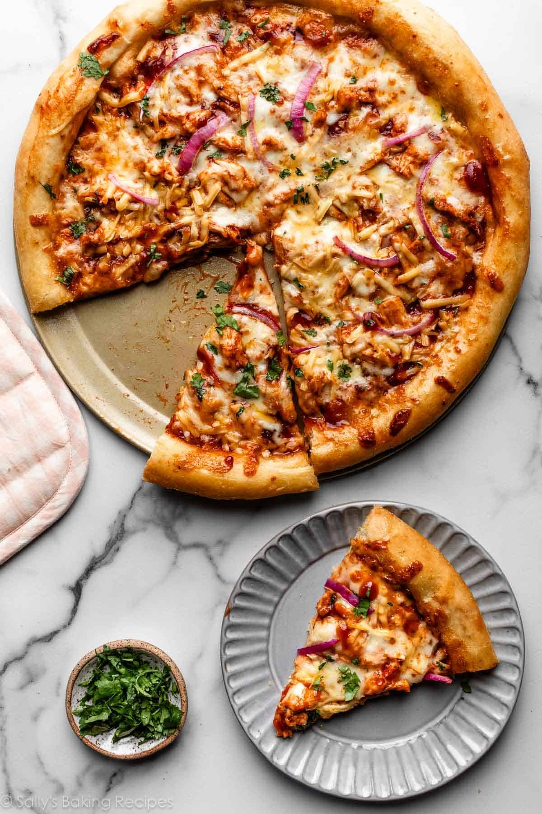

This BBQ chicken pizza has spicy barbecue sauce, diced chicken, peppers, onion, and cilantro, all covered with cheese and baked to bubbly goodness! This is similar to a recipe I had at a popular pizza place in California. My family loves it!